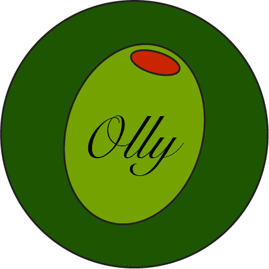
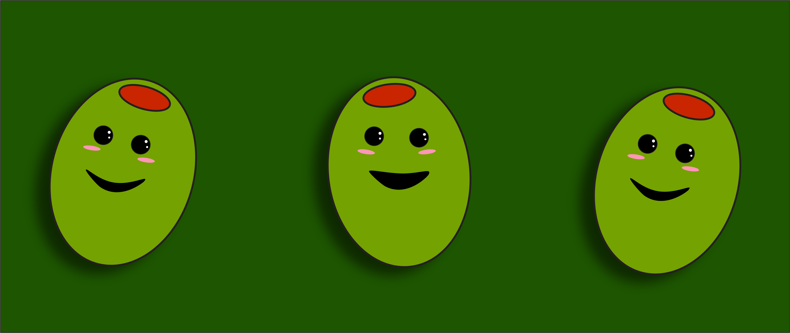

Experience
Mediterranean Bistro – Oliveville, OL
Lead Olive, Gourmet Dishes
January 2020 – Present

- Served as a key ingredient in various Mediterranean dishes, including tapenade, pasta, and salads.
- Collaborated with chefs to create innovative and flavorful recipes that highlight the olive’s natural attributes.
- Ensured each dish met the restaurant’s high standards.
Pizzeria Bella – Oliveville, OL
Topper Olive, Signature Pizzas
June 2018 – December 2019

- Featured as the primary topping in specialty pizzas, contributing to best-selling items.
- Worked with other ingredients to balance flavors and textures, achieving culinary harmony.
- Received accolades for consistency in flavor and texture.
Skills
- Studied flavor balancing and culinary presentation with top chefs.
- Extensive knowledge of Mediterranean cuisine and the role of olives.
Education
- Olive Academy – Oliveville, OL
- Degree in Culinary Application, Specialization in Mediterranean Cuisine
- Graduated: May 2016
Certifications
- Certified Organic Olive – Organic Produce Certification Board
- Sustainable Farming Practices – Green Agriculture Association
- Excellence in Culinary Arts – Oliveville Culinary Institute